The purpose of this lab is to better understand the F5 use cases OAuth2
and OpenID Connect by deploying a lab based on a popular 3rd party
login: Google. Google supports OpenID Connect with OAuth2 and JSON Web
Tokens. This allows a user to securely log in, or to provide a secondary
authentication factor to log in. Archive files are available for the
completed Lab 2.
Lab 3 Tasks:
TASK 1: Setup Google’s API Credentials
Refer to the instructions and screen shots below:
Note: If you do not have Google/gMail account, you will need to set one up. Navigate to:
|
| 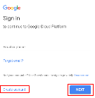
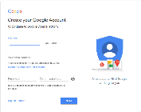 |
You will be redirected to the Google API’s screen. If you are previously familiar with
Google API’s you can create a new Project.
If you have not been you will be prompted to create a New Project.
Click Create in the dialogue box provided.
|
| 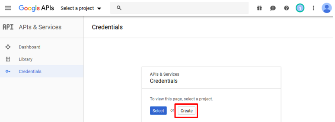 |
In the New Project window, provide a Project Name. The suggested value is:
F5 Federation oAuth
Note: If you have exceeded your project quota you may have to delete a project or
create a new account
|
| 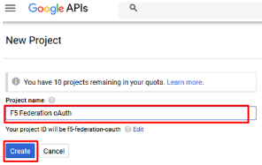 |
In the next screen, select OAuth Client ID for the Credentials type and
click Create Credentials
|
| 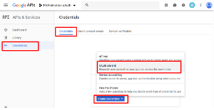 |
If you have not previously accepted a Consent Screen you may be prompted to do so.
Click Configure Consent Screen.
|
| 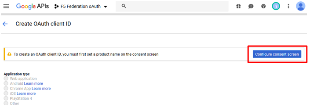 |
On the OAuth Consent Screen tab, enter the email address of your developer
account (pre-populated) for the Email Address.
For the Product Name Shown to Users enter app.f5demo.com.
Click Save.
|
| 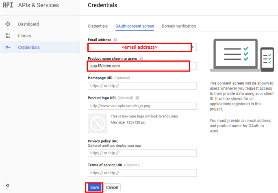 |
- In the Create OAuth Client ID* screen select or enter the following values:
- Application Type: Web Application
- Name: app.f5demo.com
- Authorized JavaScript Engine: https://app.f5demo.com
- Authorized Redirect URIs: https://app.f5demo.com/oauth/client/redirect
- Click Create.
|
| 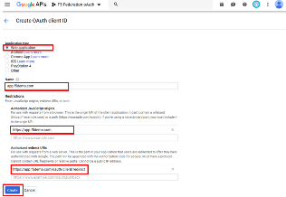 |
- In the OAuth Client pop-up window copy and paste your Client ID and
Client Secret in Gedit text editor provided on your desktop.
|
| 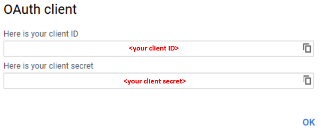 |
TASK 2: Setup F5 OAuth Provider
Refer to the instructions and screen shots below:
- Create the OAuth Provider by navigating to Access -> Federation ->
OAuth Client/Resource Server -> Provider and clicking Create.
|
| 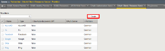 |
- Using the following values to complete the OAuth Provider
- Name: Google_Provider
- Type: Google
- Trusted Certificate Authorities: ca-bundle.crt
- Allow Self-Signed JWK Config: checked
- Use Auto-discovered JWT: checked
- Click Discover.
- Accept all other defaults.
- Click Save.
|
| 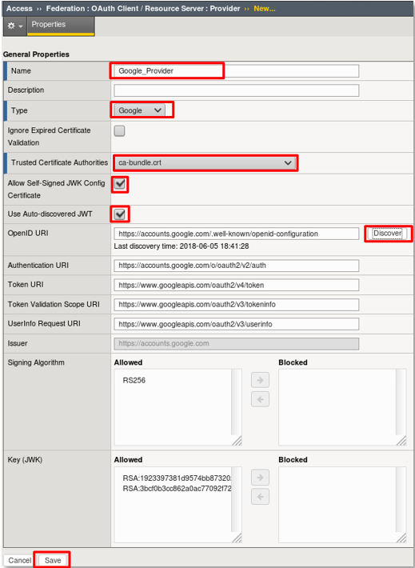 |
TASK 3: Setup F5 OAuth Server (Client)
Refer to the instructions and screen shots below:
Create the OAuth Server (Client) by navigating to Access -> Federation ->
OAuth Client/Resource Server -> OAuth Server and clicking Create.
|
| 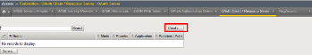 |
- Using the following values to complete the OAuth Provider
- Name: Google_Server
- Mode: Client
- Type: Google
- OAuth Provider: Google_Provider
- DNS Resolver: proxy_dns_resolver
- Client ID: <your client id>
- Client Secret: <your client secret>
- Client’s Server SSL Profile Name: serverssl
- Click Finished.
|
| 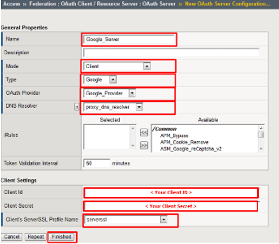 |
TASK 4: Setup F5 Per Session Policy (Access Policy)
Refer to the instructions and screen shots below:
Create the Per Session Policy by navigating to Access -> Profile/Policies ->
Access Profiles (Per Session Policies) and clicking Create.
|
 |
- In the New Profile dialogue window enter the following values
- Name: Google_OAuth
- Profile Type: All
- Profile Scope: Profile
- Language: English
- Click Finished.
|
| 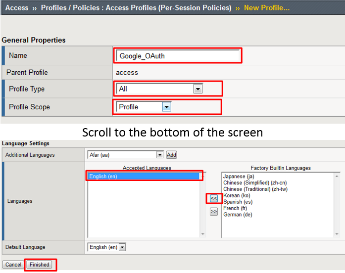 |
- Click Edit link on for the Google_OAuth Access Policy.
|
| 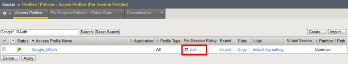 |
- In the Google_OAuth Access Policy, click the “+” between Start & Deny
- Click the Authentication tab in the events window.
- Scroll down and click the radio button for OAuth Client.
- Click Add Item.
|
| 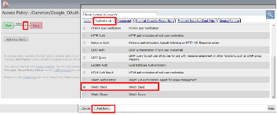 |
- In the *OAuth_Client* window enter the following values as shown:
- Server: /Common/Google_Server
- Grant Type: Authorization code
- OpenID Connect: Enabled
- OpenID Connect Flow Type: Authorization code
- Authentication Redirect Request: /Common/GoogleAuthRedirectRequest
- Token Request: /Common/GoogleTokenRequest
- Refresh Token Request: /Common/GoogleTokenRefreshRequest
- OpenID Connect UserInfo Request: /Common/GoogleUserinfoRequest
- Redirection URI: https://%{session.server.network.name}/oauth/client/redirect
- Scope: openid profile email
- Click Save.
|
| 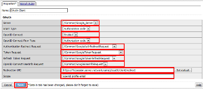 |
- Click on the Deny link, in the Select Binding, select the Allow radio button
and click Save.
|
| 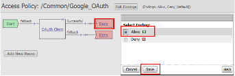 |
- Click on the *Apply Access Policy* link in the top left-hand corner.
Note: Additional actions can be taken in the Per Session policy (Access Policy).
The lab is simply completing authorization. Other access controls can be implemented based
on the use case.
|
| 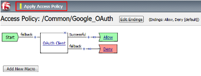 |
TASK 5: Associate Access Policy to Virtual Server
Refer to the instructions and screen shots below:
Navigate to Local Traffic -> Virtual Servers -> Virtual Server List and click
on the app.f5demo.com Virtual Server link.
Scroll to the Access Policy section.
|
 |
Use the Access Profile drop down to change the Access Profile to Google_OAuth
Use the Per-Request Policy drop down to change the Per-Request Policy to
Google_oauth_policy
Scroll to the bottom of the Virtual Server configuration and click Update
|
| 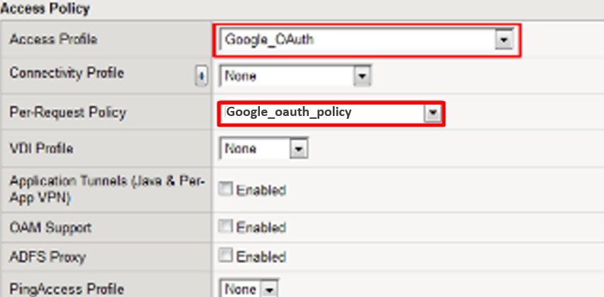 |
TASK 6: Test app.f5demo.com
Refer to the instructions and screen shots below:
- Navigate in your provided browser to https://app.f5demo.com
|
 |
- Authenticate with the account you established your Google Developer account with.
|
| 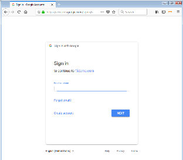 |
- Did you successfully redirect to the Google?
- After successful authentication, were you returned to the app.f5demo.com?
- Did you successfully pass your OAuth Token?
|
| 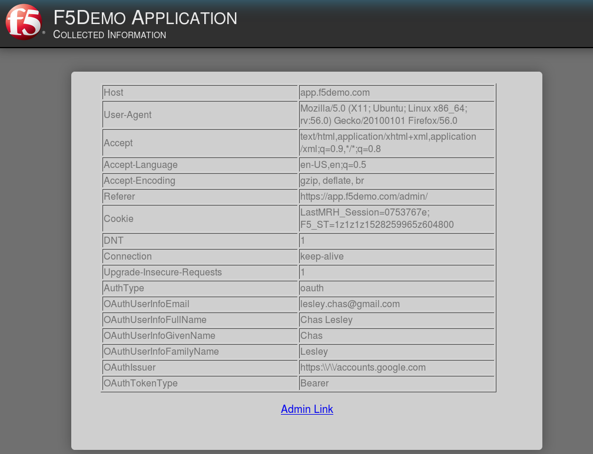 |
TASK 7: Per Request Policy Controls
Refer to the instructions and screen shots below:
- In the application page for https://app.f5demo.com click the Admin Link shown
|
| 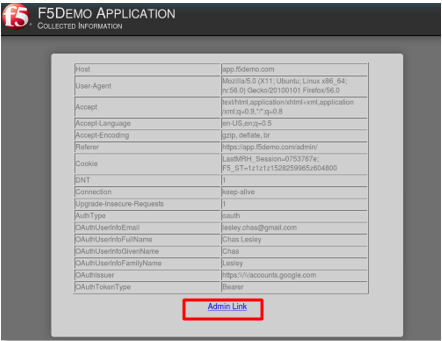 |
You will receive an Access to this page is blocked (customizable) message with a
reference. You have been blocked because you do not have access on a per request basis.
Press the Back button in your browser to return to https://app.f5demo.com.
|
 |
Navigate to Local Traffic -> iRules -> Datagroup List and click on the
Allowed_Users datagroup.
Enter your Google Account used for this lab as the String value.
Click Add then Click Update.
Note: We are using a DataGroup control to minimize lab resources and steps. AD or LDAP
Group memberships, Session variables, other user attributes and various other access
control mechanisms can be used to achieve similar results.
|
 |
You should now be able to successfully to access the Admin Functions by clicking on the
Admin Link.
Note: Per Request Policies are dynamic and do not require the same “Apply Policy” action as
Per Session Policies.
|
 |
- To review the Per Request Policy, navigate to Access Profiles/Policies ->
Per Request Policies and click on the Edit link for the Google_oauth_policy.
|
| 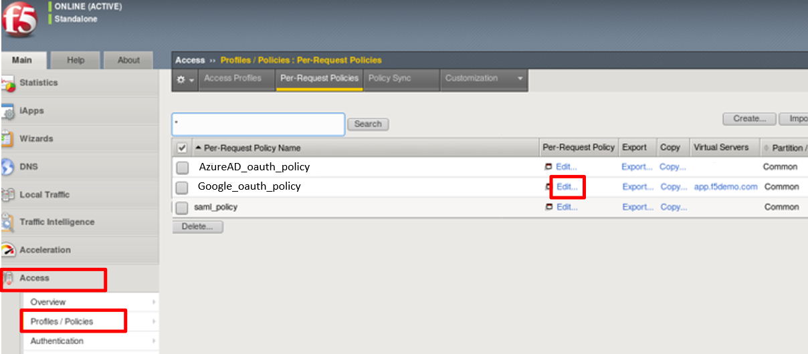 |
- The various Per-Request-Policy actions can be reviewed
Note: Other actions like Step-Up Auth controls can be performed in a Per-Request Policy.
|
| 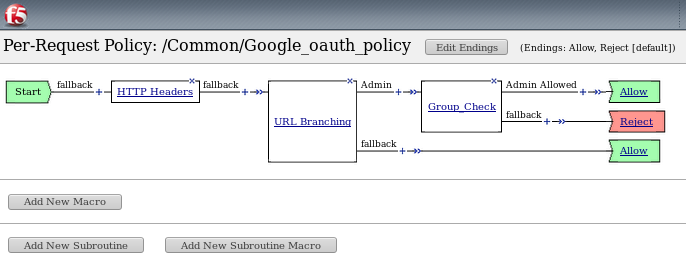 |
TASK 8: Review OAuth Results
Refer to the instructions and screen shots below:
Review your Active Sessions (Access -> Overview -> Active Sessions).
You can review Session activity or session variable from this window or kill the
selected Session.
|
| 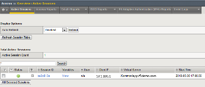 |
- Review your Access Report Logs (Access -> Overview -> Access Reports).
|
| 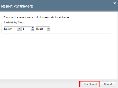 |
- In the Report Parameters window click Run Report.
|
| 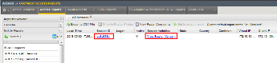 |
- Look at the SessionID report by clicking the Session ID Link.
|
| 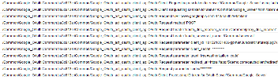 |
Look at the Session Variables report by clicking the View Session Variables link.
Pay attention to the OAuth Variables.
Note: Any of these session variables can be used to perform further actions to improve
security or constrain access with logic in the Per-Session or Per Request VPE policies or
iRules/iRulesLX.
|
 |
Review your Access Report Logs (Access -> Overview -> OAuth Reports ->
Client/Resource Server).
|
 |
{kind=link}
{kind=link}
{kind=link}
{kind=link}
{kind=link}
{kind=link}
{kind=link}
{kind=link}
{kind=link}
{kind=link}
{kind=link}
{kind=link}
{kind=link}
{kind=link}
{kind=link}
{kind=link}
{kind=link}
{kind=link}
{kind=link}
{kind=link}
{kind=link}
{kind=link}
{kind=link}
{kind=link}
{kind=link}
{kind=link}
{kind=link}
{kind=link}
{kind=link}
{kind=link}